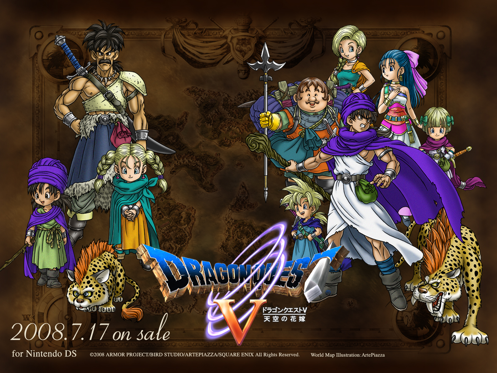
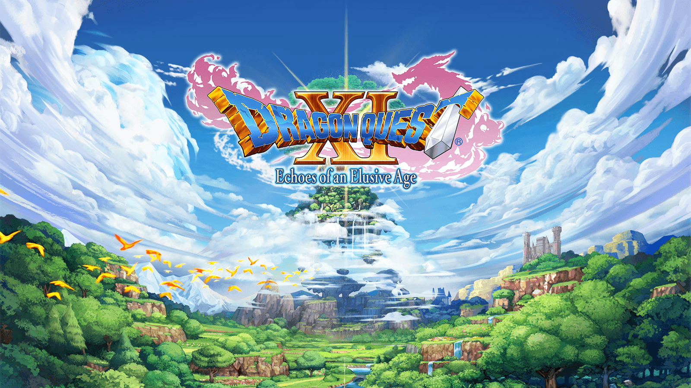
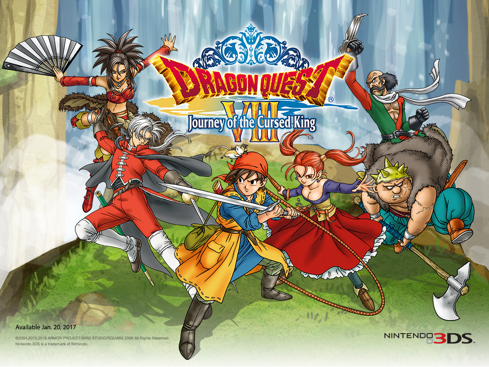

The best dragon quest I have played so far - it has monster recruiting, you go through the hero's entire life stage which is amazaing - and you even have your own kids join you.

The "first" dragon quest chronologically, also the most widely available and gosh, it has the most amazing graphics.

First Dragon Quest to move to 3D and created a sense of a wide expansive adventure.